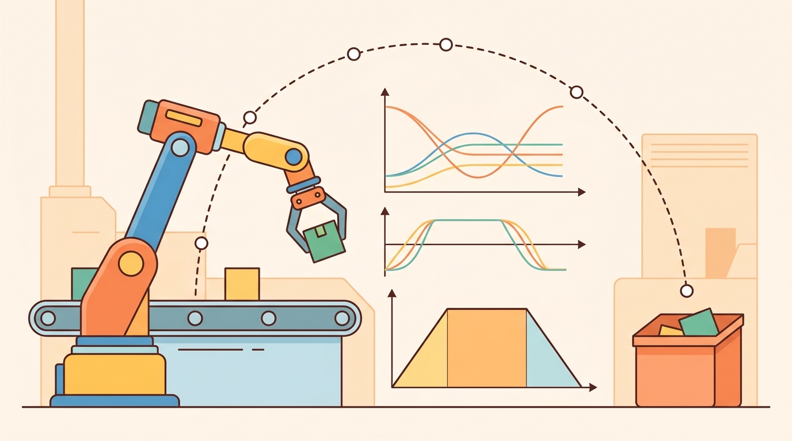

"The Jacobian is the arm's local language; a singularity is the moment it goes silent mid-sentence."
Section 5.7

This section builds directly on the forward kinematics map introduced in section 5.5 and the numerical IK solvers from section 5.6, both of which the Jacobian underpins. The velocity-level reasoning developed here carries forward into section 6.1, where forces and inertia enter the picture, and into section 7.6, where Jacobian-based error correction shapes practical control loops. Singularity avoidance recurs in Part IV alongside motion planning under constraints.
A surgical robot mid-incision, a factory arm placing a chip, a humanoid pouring coffee: each can reach its goal pose yet freeze or thrash when caught in a singular configuration where two joint axes align and the math demands infinite joint speed. The Jacobian is the real-time map from joint velocities to tool velocities, and its singular values tell you, every millisecond, how much control authority remains. As robots enter contact-rich, unstructured environments, detecting and escaping singularities on the fly is no longer a niche concern; it is the difference between a safe motion and a hardware fault. By the end of this section you will compute, interpret, and regularize the Jacobian for real arms and know exactly when manipulability is about to collapse.
This section develops the technical contract for Jacobians, singularities, manipulability into a usable mental model. First we define the object of study, then we connect it to the agent loop, then we test it with a compact implementation.
The key question in Jacobians, singularities, manipulability is practical: what must the agent know, what can it observe, what action is available, and what evidence shows that the action worked under the stated conditions?
A representation earns its place when it changes the measurable action interface. In Jacobians, singularities, manipulability, the reader should keep asking which decision becomes easier, safer, or more reliable.
Theory
For Jacobians, singularities, manipulability, the practical design rule is to make the interface inspectable before optimization begins: inputs, outputs, units, latency, bounds, and failure labels should all be visible in the saved artifact.
Consider a 6-DOF industrial arm (such as a KUKA iiwa or Universal Robots UR5) asked to polish a curved surface at constant contact force. The controller needs to command small Cartesian corrections at 1 kHz. It cannot rerun full inverse kinematics at that rate; instead it needs a lightweight local map from "how fast should the tool move?" to "how fast should each joint move?" That map is precisely what the Jacobian provides, and the quality of that map determines whether the polishing stays on the surface or overshoots at a bad posture.
The Jacobian is the local translator between joint velocity and task velocity: $\dot x=J(q)\dot q$. This relationship is called the arm's instantaneous motion budget, and it says what the arm can do in the next instant, not what it can reach eventually. This relationship is built on forward kinematics, which maps a joint configuration to the end-effector pose. That local nature is why a robot can be far from a joint limit yet still be temporarily unable to move the tool in one direction.
Singularities appear when $J(q)$ loses rank. In that posture, some task-space direction requires unbounded or very large joint velocity. Manipulability summarizes the same issue as a safety margin: large singular values mean easy motion in the corresponding direction, while tiny singular values warn that control authority is collapsing.
Students often assume that singularities are fixed, robot-wide properties: that a particular arm model is "singular" or "non-singular" in the same way it has a fixed number of joints. In embodied AI this is wrong and dangerous. Singularities are configuration-dependent: the same physical arm passes in and out of singular postures continuously during a trajectory, and the Jacobian rank changes with every joint angle update. The correct mental model is that singularity is a dynamic safety margin, tracked in real time through the manipulability scalar $w(q)$ and $\sigma_{\min}$, not a static label on the hardware. A controller that treats singularity avoidance as a one-time path-planning check rather than a per-tick monitor will fail precisely when the arm drifts into a bad posture during contact or perturbation recovery.
Why manipulability matters for embodied AI. A robot performing contact-rich tasks, such as inserting a connector or wiping a surface, must maintain force and velocity in specific directions throughout the motion. When manipulability collapses, the controller either saturates joint motors trying to follow a modest Cartesian command, or the safety firmware halts the arm entirely. Both outcomes are unacceptable during physical interaction with people or fragile objects. Monitoring $w$ at every control tick gives the planner an early-warning signal to replan or slow down before a hardware fault occurs.
How manipulability works mechanically. The SVD of $J$ produces singular values $\sigma_1 \geq \sigma_2 \geq \ldots \geq \sigma_m$. Each $\sigma_i$ is the ratio of achievable task-space speed to the unit joint-speed that produces it in one direction. The product $\prod_i \sigma_i = \sqrt{\det(JJ^\top)}$ is the volume of the reachable velocity ellipsoid: a large volume means the arm can move freely in all directions; a flat ellipsoid means motion is easy along one axis but nearly impossible perpendicular to it. As the elbow straightens, the ellipsoid collapses to a line, and $w$ reaches zero at the exact singular configuration.
Think of a chef rolling out dough with a heavy pin: when the pin is oriented diagonally across the dough, a single push spreads the dough in two directions at once, giving full control over shape. As the pin is gradually rotated until it points straight along one edge, the same push now only thins the dough lengthwise and has almost no effect across the width. The velocity ellipsoid works the same way: large singular values mean a small joint effort fans out into useful motion across many task directions, while a collapsing singular value means one spatial direction has become nearly unreachable no matter how hard the joints push.
Consider a specific case: a UR5 arm with the elbow fully extended (shoulder, elbow, and wrist centers collinear) encounters a wrist singularity where two joint axes align. The Jacobian drops to rank 5 for a 6-DOF arm, losing one task-space direction entirely. MoveIt 2's default Jacobian-based IK solver responds by clamping joint velocities, which causes the tool to slow or stop rather than follow the commanded path. The fix in practice is either to add damped least-squares (Levenberg-Marquardt regularization, covered in the numerical IK section, with a damping factor around 0.01 to 0.1) or to replan the path to avoid the singular configuration altogether. Pinocchio's computeJointJacobians plus an SVD call can detect this condition in under a millisecond on a standard CPU, making real-time avoidance feasible.
When calling Pinocchio's getJointJacobian, the reference_frame argument controls whether you receive a geometric Jacobian (LOCAL, LOCAL_WORLD_ALIGNED) or a body Jacobian, and the choice is silent: a wrong frame produces numerically valid-looking output that is wrong in task space. Use pinocchio.ReferenceFrame.LOCAL_WORLD_ALIGNED when your task velocity is expressed in the world frame, which is the most common case in Cartesian controllers. If your downstream damped-least-squares solver produces oscillation or drift near a non-singular posture, a mismatched reference frame is the first thing to check, before adjusting the damping factor.
The mechanism in Jacobians, singularities, manipulability is the contract between representation and action. Name what enters the module, what leaves it, which assumptions make that transformation valid, and which log would reveal a bad handoff.
Worked Example
The example computes the Jacobian of the planar two-link arm two ways, by finite differences of forward kinematics and analytically, confirms they agree, then sweeps the elbow toward full extension to watch the manipulability $w=\sqrt{\det(JJ^\top)}$ and smallest singular value collapse at the singularity.
import numpy as np
l1, l2 = 0.5, 0.4
def fk(q):
x = l1*np.cos(q[0]) + l2*np.cos(q[0]+q[1])
y = l1*np.sin(q[0]) + l2*np.sin(q[0]+q[1])
return np.array([x, y])
def jac_analytic(q):
s1, s12 = np.sin(q[0]), np.sin(q[0]+q[1])
c1, c12 = np.cos(q[0]), np.cos(q[0]+q[1])
return np.array([[-l1*s1 - l2*s12, -l2*s12],
[ l1*c1 + l2*c12, l2*c12]])
def jac_finite_diff(q, eps=1e-6):
J = np.zeros((2, 2))
for i in range(2):
dq = np.zeros(2); dq[i] = eps
J[:, i] = (fk(q + dq) - fk(q - dq)) / (2*eps)
return J
q = np.deg2rad([35.0, 60.0])
print("max |analytic - finite diff|:",
f"{np.max(np.abs(jac_analytic(q) - jac_finite_diff(q))):.2e}")
def manipulability(q):
J = jac_analytic(q)
return np.sqrt(max(np.linalg.det(J @ J.T), 0.0))
print(" elbow(deg) w=sqrt(det(JJ^T)) sigma_min")
for q2_deg in [90, 30, 10, 2, 0]:
q = np.deg2rad([35.0, q2_deg])
sigma = np.linalg.svd(jac_analytic(q), compute_uv=False)
print(f" {q2_deg:4d} {manipulability(q):.5f} {sigma.min():.5f}")
# As the elbow straightens (q2 -> 0), w and sigma_min -> 0: a singularity.
The finite-difference cross-check certifies the analytic Jacobian on one posture; the sweep shows why manipulability is a usable early-warning signal. At a healthy elbow angle of 90 degrees the smallest singular value is about 0.40 and manipulability $w \approx 0.20$; by the time the elbow reaches 2 degrees both numbers have collapsed below 0.014, a 28-fold drop in control authority from a single postural change. A controller that asks for fast Cartesian motion at $q_2\approx 0$ demands near-infinite joint velocity, so damping or task relaxation must engage before the singular value reaches the configured margin.
The Jacobian fragment should show how joint velocity becomes task-space velocity and how singular values warn about lost authority. Pinocchio and Drake compute derivatives at scale; the hand check keeps units and frames honest.
Practical Recipe
- Write the observation, action, and success metric before choosing a model.
- Build a baseline that is simple enough to debug by inspection.
- Add the library implementation only after the baseline behavior is understood.
- Record failures as structured cases: perception error, state error, planning error, control error, or evaluation error.
- Run at least one perturbation test before trusting the result.
The common mistake in Jacobians, singularities, manipulability is to celebrate the component score before checking the closed-loop handoff. The failure usually appears at the boundary: stale state, wrong frame, delayed action, saturated actuator, or metric that ignores the real task cost.
On a Franka Panda arm running a Cartesian impedance controller at 1 kHz, logging only final task success misses the characteristic warning pattern that precedes a singularity fault: manipulability $w$ drops below 0.05, the controller begins oscillating at the joint-velocity saturation limit (2.175 rad/s for Panda joints 1 and 4), and within 50 to 100 ms the safety stop fires. A diagnostic trace that records $\sigma_{\min}$, joint-velocity saturation flags, and the commanded-versus-achieved Cartesian velocity at every control tick reveals this cascade early enough to trigger a damped-least-squares fallback before the safety stop engages. Without per-tick logging, the only visible event is the abrupt halt, which is indistinguishable from a collision detection trigger and sends the team chasing the wrong root cause.
For jacobians, singularities, manipulability, the useful test is simple: could a teammate point to the log line, plot, or trace that proves the idea changed the agent's next action?
Learning manipulability metrics for contact-rich tasks (2024-2026). Classical manipulability uses a single scalar $w(q)$ that treats all task directions equally, but contact-rich manipulation requires direction-aware metrics that weight force transmission differently from velocity range. Recent work from Billard Lab (EPFL) and collaborators, including Jaquier et al. "Geometry-aware Manipulability Learning, Tracking, and Transfer" (IJRR 2024), formulates manipulability as a symmetric positive-definite tensor on a Riemannian manifold, enabling smooth interpolation and imitation learning of task-specific manipulability targets across robot morphologies.
Singularity-robust whole-body control for humanoids (2024-2026). Humanoid platforms such as Unitree H1 and Agility Robotics Digit expose kinematic chains where singularities interact with balance constraints, making scalar damping insufficient. Research groups at CMU and ETH Zurich (Grandia et al., "Doc: Differentiable Optimal Control for Retargeting Motion Capture Data to Robots", ICRA 2024) couple singularity avoidance directly with contact-force feasibility inside a single QP, so the controller simultaneously escapes singular postures and preserves ground contact stability during dynamic locomotion.
Neural Jacobians and differentiable kinematics for deformable and continuum robots (2025-2026). Traditional analytic Jacobians assume rigid links, but soft, tendon-driven, and continuum robots (such as pneumatic manipulators for surgical use) have configuration-dependent stiffness that invalidates the rigid model. Labs including the Soft Robotics group at Harvard SEAS and Imperial College London are training neural Jacobian models that map joint commands to task-space velocity directly from proprioceptive and vision data, bypassing the need for a rigid kinematic model while still supporting real-time singularity detection via learned singular value estimates.
Open problem for PhD students. Manipulability ellipsoids are well defined for velocity tasks, but there is no widely accepted task-space metric for combined force-velocity dexterity under contact uncertainty, where the contact normal direction is stochastic. Deriving a Riemannian formulation of manipulability that incorporates contact probability distributions and remains differentiable through the kinematic chain would enable gradient-based trajectory optimization to avoid both kinematic singularities and grasp-force degeneracy in a single pass.
Can you name the observation, state estimate, action, success metric, and most likely failure mode for Jacobians, singularities, manipulability? If not, the system boundary is still too vague.
Production Pattern
Jacobians, singularities, manipulability sits inside the Part II robotics contract: geometry defines where things are, kinematics defines what motion is possible, dynamics defines what motion costs, control defines how errors are corrected, and sensing defines what the agent can know on time.
Track Jacobian rank, singular values, and manipulability before asking a controller for high task-space speed. This makes the section useful to students, builders, and researchers at the same time: the idea has an intuitive role, a formal interface, a runnable check, and a failure mode that can be reproduced.
For Jacobians, singularities, manipulability, kinematics maps joint or body motion into task-space motion without explaining forces. Preserve joint limits, frame conventions, velocity units, and singularity margins in the artifact.
| Tool or Library | What It Handles | Verification Check |
|---|---|---|
| Pinocchio | computes articulated-body kinematics, dynamics, and derivatives | Verify model frames, joint ordering, and derivative convention against the URDF. |
| Robotics Toolbox for Python | supports practical work on Jacobians, singularities, manipulability | Verify the library output against the hand-built baseline on one small case. |
| MoveIt 2 | supports practical work on Jacobians, singularities, manipulability | Verify the library output against the hand-built baseline on one small case. |
| Drake | models dynamical systems, multibody plants, optimization, and controllers | Verify scalar type, plant finalization, frame convention, and solver status. |
| ROS 2 control | supports practical work on Jacobians, singularities, manipulability | Verify the library output against the hand-built baseline on one small case. |
Use this recipe when turning Jacobians, singularities, manipulability into code, a simulator experiment, or a robot diagnostic. The point is not to use every library. The point is to keep the hand-built baseline and the maintained-tool path comparable.
- Write the joint vector, frame target, velocity convention, and constraint set before solving.
- Check forward kinematics on a known posture, then perturb one joint and inspect the end-effector delta.
- Compare an analytic or numerical Jacobian with Pinocchio, Robotics Toolbox, or Drake on the same robot model.
- Log residual error, joint-limit distance, manipulability, and solver iteration count in one artifact.
- Treat singularities and infeasible targets as design signals, not as solver annoyances.
For Jacobians, singularities, manipulability, compare methods only through one saved artifact that preserves the inputs, outputs, units, timestamps, latency budget, configuration, seed, metric definition, and failure labels relevant to this section. The comparison is meaningful only when the same script evaluates the same panel.
Extend the section exercise by adding one perturbation specific to Jacobians, singularities, manipulability and one latency or uncertainty check. Save the result in the EvidenceRecord schema, then explain which library output you trust and why.
Kinematic failures often arrive as a plausible pose with an impossible motion. Inspect Jacobian rank, singular values, task frame, joint velocity limits, and whether the task has fewer or more dimensions than the joints before blaming the planner. For this section, first reproduce one small Jacobian by finite differences, then rerun it through Pinocchio, Robotics Toolbox for Python, MoveIt 2, or Drake. If the two disagree, inspect conventions and timing before changing the model.
Technical Core
Jacobians, singularities, manipulability needs a topic-native core: variables, equations or system contracts, an algorithmic procedure, an expected output, and a failure diagnosis. Figure 5.7.T summarizes the chain this section must preserve when moving from a teaching example to a real embodied system.
$\dot x=J(q)\dot q,\quad J=U\Sigma V^\top,\quad \kappa(J)=\sigma_{\max}/\sigma_{\min},\quad w(q)=\sqrt{\det(JJ^\top)}$
The singular values in $\Sigma$ describe the lengths of the manipulability ellipsoid axes. When $\sigma_{\min}$ approaches zero, motion in the corresponding task direction becomes expensive or impossible, so damping and task relaxation become safety tools rather than numerical decorations.
- Compute $J(q)$ in the same frame used by the task velocity or pose residual.
- Run an SVD and log rank, $\sigma_{\min}$, $\sigma_{\max}$, condition number, and manipulability.
- Compare analytic Jacobian columns against finite differences of forward kinematics on one known posture.
- Before commanding high task-space speed, scale or damp commands when $\sigma_{\min}$ falls below the configured margin.
| Contract Field | What To Specify | Why It Matters |
|---|---|---|
| State and observation | Variables, units, timestamps, frames, and uncertainty. | Prevents a model score from being mistaken for robot capability. |
| Action interface | Command type, limits, update rate, and safety fallback. | Makes the learned or planned output executable. |
| Evidence artifact | Trace, metric, configuration, seed, and failure label. | Allows baseline and library path to be compared in one pass. |
| Tool path | Modern Robotics, Pinocchio, Drake, ROS 2 tf2, MoveIt, NumPy | Shows the practical library route after the mechanism is understood. |
Expected output is a Jacobian diagnostic trace with stable rank away from singularities, a finite condition number, and singular-value warnings before the controller saturates. A manipulability score is useful only when it is reported with the task frame and the relevant velocity limits.
A Jacobian result fails when a geometric Jacobian is compared to an analytic one without conversion, finite-difference steps are too large or too small, singular values collapse near a stretched-arm posture, or damping hides an infeasible task without reporting the residual.
Section References
Core references for Jacobians, singularities, manipulability: Modern Robotics; Murray, Li, and Sastry; Siciliano et al.; LaValle; and official documentation for Drake, MuJoCo, Pinocchio, CasADi, python-control, GTSAM, ROS 2, and OpenCV as applicable.
Use these references to check notation, frame conventions, units, solver assumptions, and maintained-library behavior.
Jacobians, singularities, manipulability is useful when it makes the perception-action loop more reliable, not when it merely adds a more impressive model name.
Design a method-matched experiment for Jacobians, singularities, manipulability. Specify the environment, observations, actions, metric, one perturbation, and the library output you would compare against the hand-built baseline.
Project Ideas
Manipulability monitor for a simulated UR5 (beginner, one weekend): Use PyBullet to load a UR5 URDF, drive the arm through a scripted joint trajectory, and plot the manipulability scalar $w(q)$ and minimum singular value in real time; the key challenge is computing the geometric Jacobian from PyBullet's joint state API and matching its frame convention to the analytic formula. Singularity-aware Cartesian controller (intermediate, 1 to 2 weeks): Build a ROS2 node that subscribes to a Cartesian velocity command, computes the Jacobian via Pinocchio at every control tick, applies damped-least-squares regularization when $\sigma_{\min}$ falls below a configurable threshold, and publishes joint velocity commands; test it on a MuJoCo simulation of a Franka Panda arm by commanding a straight-line trajectory that passes through the elbow-straight singularity and verifying the arm slows gracefully instead of faulting. Manipulability-aware motion planner (intermediate, 1 to 2 weeks): Integrate a manipulability cost term into a sampling-based planner using Gymnasium and a custom reaching environment so that paths are penalized for passing near singular configurations; the key challenge is computing $w(q)$ efficiently inside the planner's reward function without re-deriving forward kinematics from scratch at every sample.